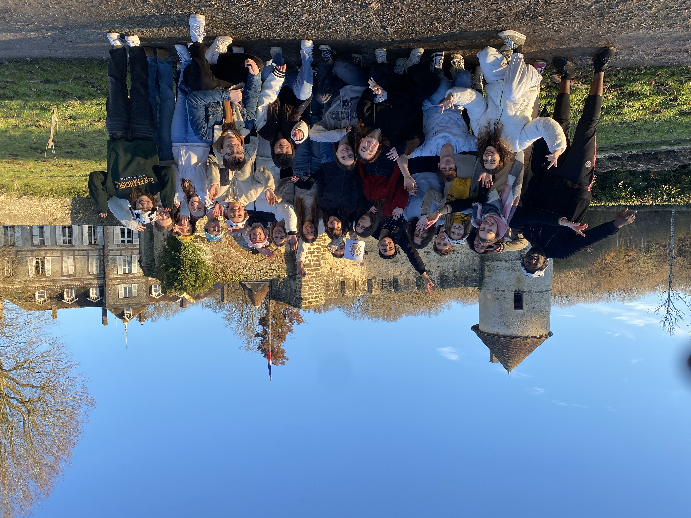
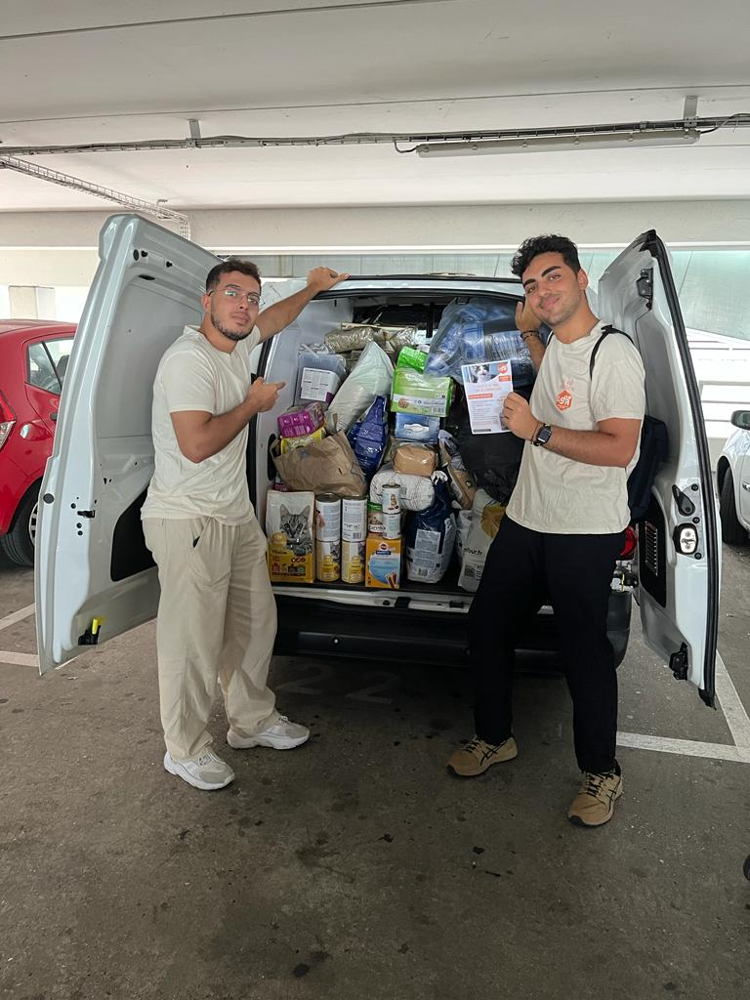
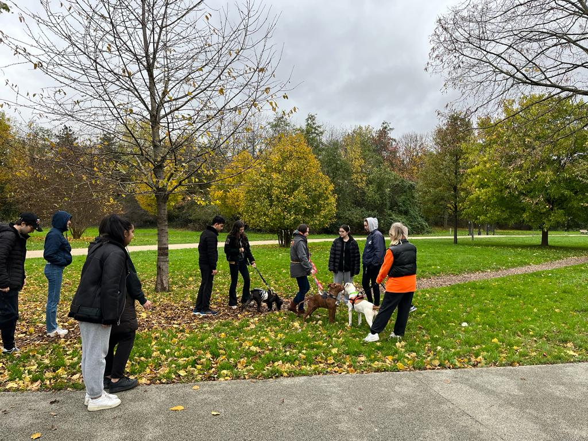
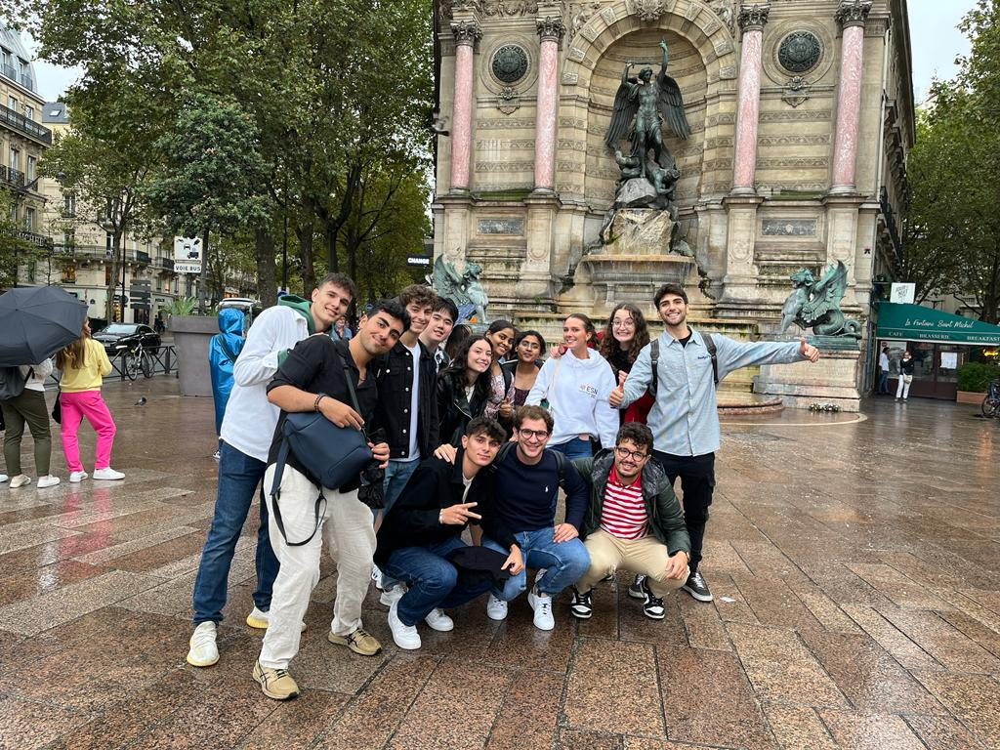
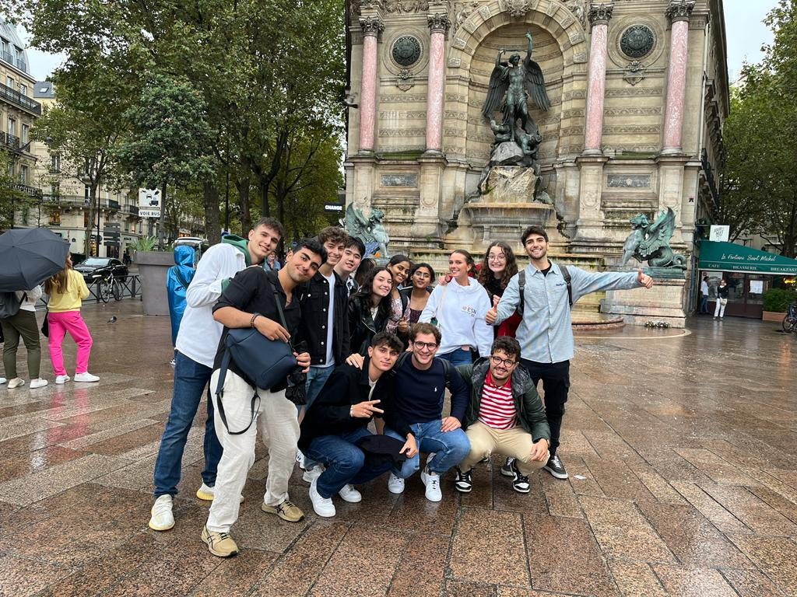

Qu’est-ce que Léo&Co ?
Léo&Co est l’association de protection animale du pôle Léonard de Vinci. Le but de l'association est d'aider différents organismes sensibles à la cause animale (refuges, associations) de multiples manières : bénévolat, levées de fonds, sensibilisation sur les réseaux sociaux... Léo&Co compte actuellement 90 membres, tous des étudiants du pôle universitaire Léonard de Vinci.
Pourquoi avoir rejoint Léo&Co?
J'ai décidé de rejoindre Léo&Co car je suis très sensible à la cause animale depuis tout jeune. J'ai toujours voulu travailler en tant que bénévole dans des refuges mais je n'ai jamais eu l'occasion de le faire avant de rejoindre mon école.
Quel est mon rôle au sein de Léo&Co ?
Je suis actuellement le président de Léo&Co pour l’année 2023/2024.
J’ai d'abord rejoint Léo&Co en tant que membre en 2022, puis, étant particulièrement impliqué, j’ai été nommé responsable des pôles évènements internes et externes (50 personnes sous ma direction).
Désormais, je suis en charge de superviser toutes les actions que l’association entreprend, d’aider sur toutes les tâches et d’apporter des idées. Voici une liste non-exhaustive de ce que j'ai pu accomplir en tant que président de Léo&Co:
- Élaboration d’un partenariat majeur avec la SPA Gennevilliers
- Elaboration du projet annuel de Léo&Co consistant en un voyage humanitaire au Maroc, visant à aider l’association SFT Morocco, une association qui vient en aide aux chiens errants du Maroc, souffrants d’une situation désastreuse à l’approche de la coupe du monde 2030. Le but principal, en dehors de l’aide en personne, est de réaliser un documentaire afin de sensibiliser à la cause canine au Maroc.
- Nouvelle charte graphique & nouveau logo
- Obtention d’un local pour notre association
Quelles compétences ai-je développé à Léo&Co ?
- Savoir trouver des partenariats avec divers refuges/organisations, françaises ou non (Partenariat SPA, Voyage humanitaire au Maroc ..)
- Savoir structurer une association (organisation modifiée, postes crées..)
- Savoir motiver les membres de l'association
- Compétences graphiques (Canva & Photoshop)
- Prise de parole en public
- Gestion de projet
  
_________________________________________________________________

Qu’est-ce que ESN Devinci ?
ESN (Erasmus Student Network) Devinci est l’association d’accueil et d’intégration des étudiants étrangers du pôle Léonard de Vinci. L’association fait partie du réseau ESN international, comptant plus de 510 associations à travers le monde.
Pourquoi avoir rejoint ESN Devinci ?
J'ai décidé de rejoindre ESN Devinci car je suis un grand passionné de voyage. J'ai un attachement profond à l'international, à faire découvrir ma culture tout en découvrant celles des étudiants internationaux.
Quel est mon rôle au sein d’ESN Devinci ?
Je suis actuellement responsable des partenariats d’ESN Devinci pour l’année 2023/2024.
Je suis devenu membre d’ESN Devinci en 2022. J’ai décidé de rejoindre le pôle évènement lors de mon arrivée, et j’ai pu proposer aux étudiants étrangers tout au long de l’année des évènements divers et variés dans Paris.
- Renforcement de nos relations avec le réseau ESN.
- Organisation d’un voyage pour les étudiants étrangers : visite des châteaux de la Loire, de Chambord et dégustation de vin.
- Trouver des partenariats avec des bars et boutiques sur Paris.
- Élaboration des sweats 2023-2024 (Aide au design, appel et négociation auprès du prestataire…)
Quelles compétences ai-je développé à ESN Devinci ?
Voici une liste non-exhaustive des principales compétences que j'ai pu développer à ESN jusqu'à présent:
- Amélioration continue de mes compétences en anglais, japonais et espagnol
- Démarchage commercial et négociations
- Savoir trouver des partenariats avec diverses entreprises/organisations, françaises et internationales (Bars, Boutiques, Réseau ESN International..)
- Savoir motiver les membres de l'association
- Prise de parole en public
 

_________________________________________________________________

Qu’est-ce que LéoIndieGames ?
LéoIndieGames (LIG) est l’association de création de jeux-vidéos indépendants du pôle Léonard de Vinci. L'association propose notamment des formations, des cours sur différents domaines du jeu-vidéo, ainsi que des activités diverses et variés autour de cet univers.
Pourquoi avoir rejoint LéoIndieGames ?
Étant passionné de jeux-vidéo depuis tout jeune, lorsque j’ai su que je pouvais réellement apprendre à créer mes propres jeux grâce à cette association, je n’ai pas hésité une seule seconde à la rejoindre.
Qu’est-ce que j’y fais concrètement ?
J’assiste à de nombreux cours/formations dispensés par l’association sur des nombreux domaines du jeu-vidéo comme le game design, le développement (C#) ainsi que l’apprentissage d’Unity. J’ai pu également réaliser des prototypes de jeux lors de « Game-jams », des « concours mensuel » au sein de l'association autour d’un thème en particulier.
Quelles compétences ai-je développé à LéoIndieGames ?
Voici une liste non-exhaustive des principales compétences que j’ai pu développer à LIG jusqu’à présent :
- Amélioration de mes compétences en C#
- Maîtrise d’Unity
- Notions en game design
- Aptitude à réfléchir à un gameplay, à des scénarios, à des mécaniques de jeu.